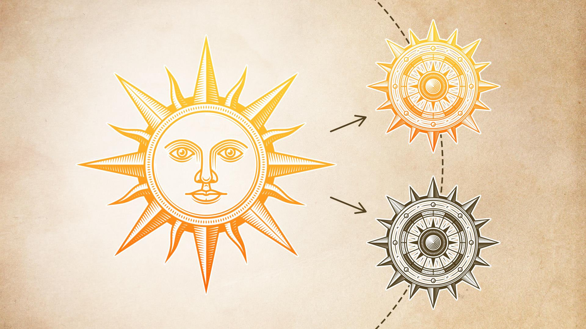
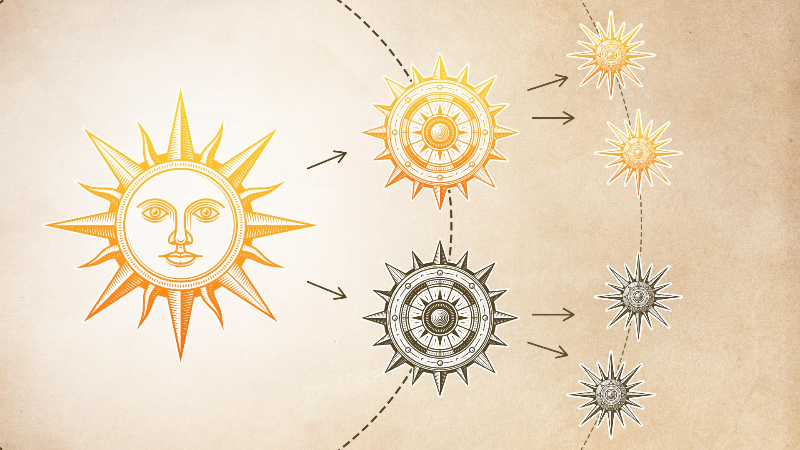
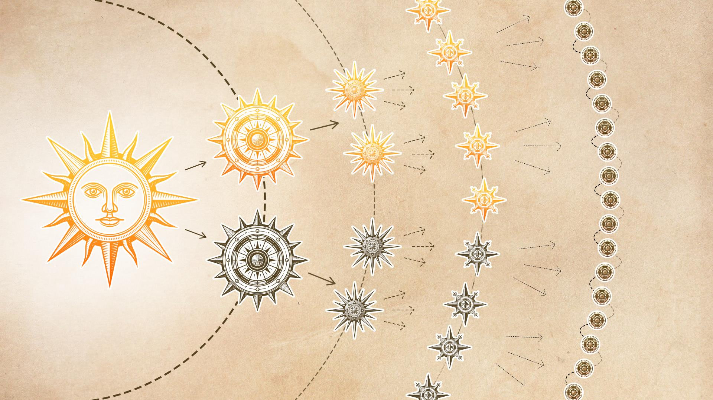
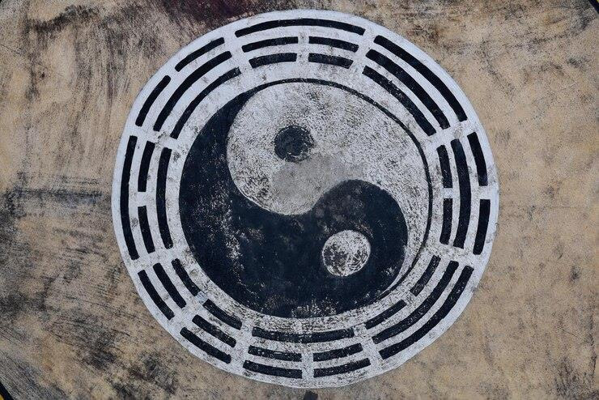

Panteísmo Dualista
Para resolver a contradição do panteísmo puro, surge o dualismo: Deus é bom e fonte de todo o ser, mas gera ou emana imagens de Si mesmo, uma em positivo, outra em negativo. Este processo se repete.



Bem e Mal Misturados
No grau mais baixo, o das almas humanas, bem e mal, luz e trevas, amor e ódio estão misturados. O mal não é fruto da matéria, mas do espírito.
A tarefa da alma nesta vida é a de purificar-se do mal que encontra em si; pode ou não reencarnar-se, mas o que importa é que pratique o desprendimento.

Yin e Yang
O símbolo chinês do yin-yang, que representa duas serpentes entrelaçadas: a escura representa a sombra, o sofrimento, a matéria, o princípio feminino e o mal; a branca, a luz, a energia, o espírito, o princípio masculino e o bem.
Religiões Dualistas
O dualismo e seus limites lógicos.
O dualismo é menos logicamente repugnante que o panteísmo original, mas implicaria que o ser gera o nada, o bem gera o mal, o espírito gera a matéria etc. Em última análise, portanto, não resolve a violação do princípio da não-contradição.
São dualistas a antiga religião chinesa pré-confuciana; o zoroastrismo persa, formulado ca. 550 a.C.; o gnosticismo, uma heresia cristã dos primeiros séculos, e seus derivados, como o maniqueísmo do século XII; e diversas seitas esotéricas ocidentais.